OpenShift Service Mesh
- OpenShift Service Mesh
Overview
Sample application

Setup Control Plane and sidecar
Install following Operators from OperatorHub
- Red Hat OpenShift distributed tracing platform (Jaeger for OpenShift Service Mesh earlier than version 2.1)
- Kiali
- OpenShift Service Mesh
ElasticSearch (Optional)
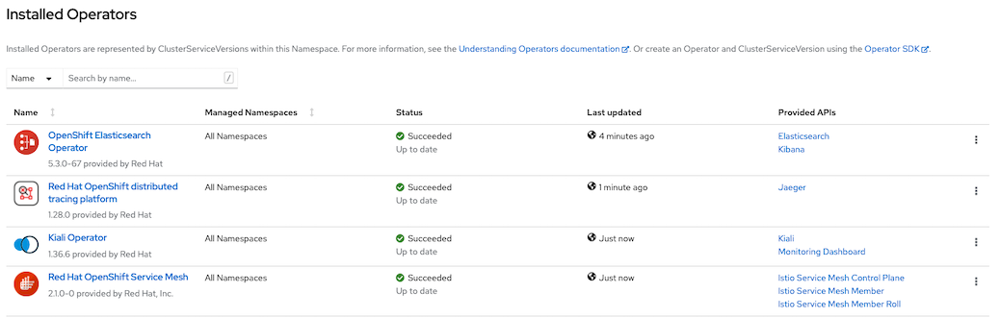
Install with CLI
oc apply -f manifests/ossm-sub.yaml oc wait --for condition=established --timeout=180s \ crd/servicemeshcontrolplanes.maistra.io \ crd/kialis.kiali.io \ crd/jaegers.jaegertracing.io oc get csvOutput
NAME DISPLAY VERSION REPLACES PHASE jaeger-operator.v1.30.0 Red Hat OpenShift distributed tracing platform 1.30.0 Succeeded kiali-operator.v1.36.7 Kiali Operator 1.36.7 kiali-operator.v1.36.6 Succeeded servicemeshoperator.v2.1.1 Red Hat OpenShift Service Mesh 2.1.1-0 servicemeshoperator.v2.1.0 SucceededCreate control plane by create ServiceMeshControlPlane CRD
CLI
oc new-project istio-system oc create -f manifests/smcp.yaml -n istio-systemOpenShift Administrator Console
Switch to Adminstration and navigate to: Operators -> Installed Operators then select Red Hat OpenShift Service Mesh->Service Mesh Control Plane
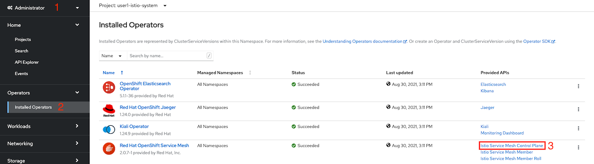
Select Create ServiceMeshControlPlane
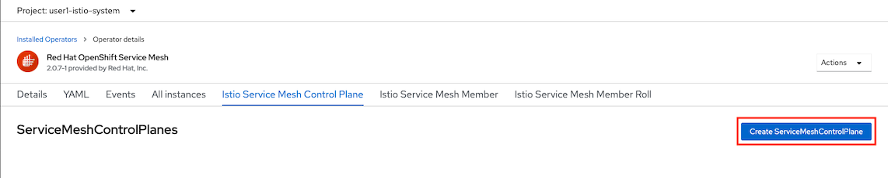
- Navigate to Proxy and input following values to enable access log at Envoy (sidecar)

- Set outbound traffic policy

<!-- - Set auto mTLS to false
 -->
- Verify YAML

- Create
Check for control plane creating status
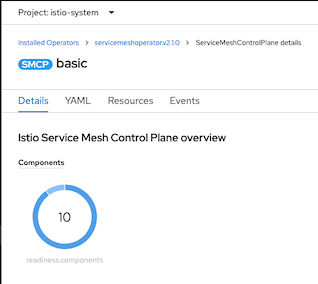
or Bash shell get-smcp-status.sh
bin/get-smcp-status.sh basic istio-systemor just CLI
oc get smcp/basic -n istio-systemOutput
NAME READY STATUS PROFILES VERSION AGE basic 10/10 ComponentsReady ["default"] 2.1.1 66sJoin project1 into control plane
Create data plane project
oc new-project project1Review ServiceMeshMemberRoll CRD
apiVersion: maistra.io/v1 kind: ServiceMeshMemberRoll metadata: name: default spec: members: - project1Apply ServiceMeshMemberRoll
oc create -f manifests/smmr.yaml -n istio-systemCheck for ServiceMeshMemberRoll status
oc describe smmr/default -n istio-system | grep -A2 Spec:
Deploy sidecar to frontend app in project1
oc apply -f manifests/frontend.yaml -n project1 oc patch deployment/frontend-v1 -p '{"spec":{"template":{"metadata":{"annotations":{"sidecar.istio.io/inject":"true"}}}}}' -n project1 oc patch deployment/frontend-v2 -p '{"spec":{"template":{"metadata":{"annotations":{"sidecar.istio.io/inject":"true"}}}}}' -n project1
Check for sidecar in frontend-v1 and frontend-v2 pods
oc get pods -n project1Sample output
NAME READY STATUS RESTARTS AGE frontend-v1-577b98f48c-6j5zg 2/2 Running 0 15s frontend-v1-c5d4648f9-7jfk2 1/1 Terminating 0 13m frontend-v2-5cd968bc59-cwsd8 2/2 Running 0 14s frontend-v2-5d4dbdbc9-k6787 1/1 Terminating 0 13mCheck developer console

Traffic Management
Destination Rule, Virtual Service and Gateway
Kiali
Open Kiali Console
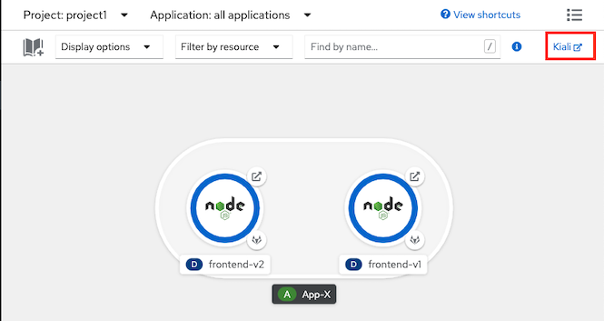
Navigate to Services and select frontend, Actions-> Request Routing
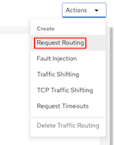
Click Route To, Set weight of frontend-v1 to 100% then Click Add Rule
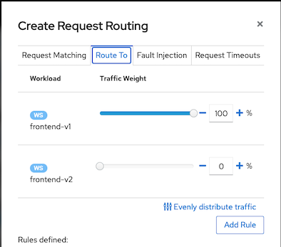
Click Show Advanced Options
Check cluster domain
DOMAIN=$(oc whoami --show-console|awk -F'apps.' '{print $2}') echo $DOMAINVirtual Service Hosts frontend.apps.$DOMAIN

Gateway
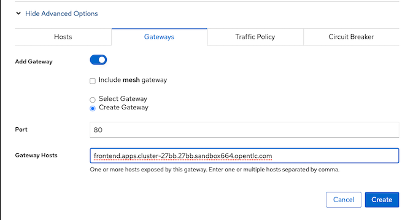
Traffic Policy

Create
CLI/YAML
Create Destination Rule for frontend v1 and frontend v2
Review Destination Rule CRD
apiVersion: networking.istio.io/v1alpha3 kind: DestinationRule metadata: name: frontend spec: host: frontend subsets: - name: v1 labels: app: frontend version: v1 trafficPolicy: loadBalancer: simple: ROUND_ROBIN - name: v2 labels: app: frontend version: v2 trafficPolicy: loadBalancer: simple: ROUND_ROBINCreate destination rule
oc apply -f manifests/frontend-destination-rule.yaml -n project1
Create Virtual Service for frontend app
Review Virtual Service CRD, Replace DOMAIN with cluster's sub-domain.
apiVersion: networking.istio.io/v1alpha3 kind: VirtualService metadata: name: frontend spec: hosts: - frontend.apps.DOMAIN gateways: - project1/frontend-gateway http: - route: - destination: port: number: 8080 host: frontend.project1.svc.cluster.localReplace DOMAIN with cluster DOMAIN and create virtual service or run following command
DOMAIN=$(oc whoami --show-console|awk -F'apps.' '{print $2}') cat manifests/frontend-virtual-service.yaml | sed 's/DOMAIN/'$DOMAIN'/'|oc apply -n project1 -f -
Create Gateway for frontend app
Check for cluster's sub-domain
DOMAIN=$(oc whoami --show-console|awk -F'apps.' '{print $2}') echo $DOMAINReview Gateway CRD, Replaced DOMAIN with cluster's sub-domain
apiVersion: networking.istio.io/v1alpha3 kind: Gateway metadata: name: frontend-gateway spec: selector: istio: ingressgateway # use istio default controller servers: - port: number: 80 name: http protocol: HTTP hosts: - 'frontend.apps.DOMAIN'Replace DOMAIN with your clsuter sub-domain and Create gateway
oc apply -f manifests/frontend-gateway.yaml -n project1or use following bash command
DOMAIN=$(oc whoami --show-console|awk -F'apps.' '{print $2}') cat manifests/frontend-gateway.yaml | sed 's/DOMAIN/'$DOMAIN'/'|oc apply -n project1 -f -Check that route is automatically created
oc get route -n istio-system | grep frontend-gatewaySample outout
project1-frontend-gateway-5f5077c573bd9294 frontend.apps.cluster-27bb.27bb.sandbox664.opentlc.com istio-ingressgateway http None<!-- - Create Route (configured with Istio Gateway) for frontend app
Review Route, Replace DOMAIN with cluster's DOMAIN
apiVersion: v1 kind: Route metadata: name: frontend spec: host: frontend.apps.DOMAIN port: targetPort: http2 to: kind: Service name: istio-ingressgateway weight: 100 wildcardPolicy: NoneReplace DOMAIN with cluster DOMAIN then create Route
oc apply -f manifests/frontend-route-istio.yaml -n istio-systemor use following bash command
bash DOMAIN=$(oc whoami --show-console|awk -F'apps.' '{print $2}') cat manifests/frontend-route-istio.yaml | sed 's/DOMAIN/'$DOMAIN'/'|oc apply -n project1 -f --->
Test Istio Gateway
Test with cURL
FRONTEND_ISTIO_ROUTE=$(oc get route -n istio-system|grep frontend-gateway |awk '{print $2}') curl http://$FRONTEND_ISTIO_ROUTE
A/B Deployment with Weight-Routing
Set weight routing between 2 services with virtual service Remark: if you use above Kiali steps then you already set 100% traffic to frontend-v1
Check for virtual service with weight routing, Replace DOMAIN with cluster's DOMAIN
apiVersion: networking.istio.io/v1alpha3 kind: VirtualService metadata: name: frontend spec: hosts: - frontend.apps.DOMAIN gateways: - project1/frontend-gateway http: - route: - destination: port: number: 8080 host: frontend.project1.svc.cluster.local subset: v1 weight: 100 - destination: port: number: 8080 host: frontend.project1.svc.cluster.local subset: v2 weight: 0- Apply virtual service for Blue/Green deployment with route all traffic to v1
DOMAIN=$(oc whoami --show-console|awk -F'apps.' '{print $2}') cat manifests/frontend-virtual-service-with-weight-routing.yaml | sed 's/DOMAIN/'$DOMAIN'/'|oc apply -n project1 -f -CLI
- Test with cURL to verify that all requests are routed to v1
Blue/Green deployment by route all requests to v2
oc patch virtualservice frontend --type='json' -p='[{"op":"replace","path":"/spec/http/0","value":{"route":[{"destination":{"host":"frontend.project1.svc.cluster.local","port":{"number":8080},"subset":"v1"},"weight":0},{"destination":{"host":"frontend.project1.svc.cluster.local","port":{"number":8080},"subset":"v2"},"weight":100}]}}]' -n project1Test with cURL to verify that all requests are routed to v2
Adjust traffic 30% to v2
oc patch virtualservice frontend --type='json' -p='[{"op":"replace","path":"/spec/http/0","value":{"route":[{"destination":{"host":"frontend.project1.svc.cluster.local","port":{"number":8080},"subset":"v1"},"weight":70},{"destination":{"host":"frontend.project1.svc.cluster.local","port":{"number":8080},"subset":"v2"},"weight":30}]}}]' -n project1
Kiali
Test A/B deployment
Run 100 requests
FRONTEND_ISTIO_ROUTE=$(oc get route -n istio-system|grep frontend-gateway |awk '{print $2}') COUNT=0 rm -f result.txt while [ $COUNT -lt 100 ]; do OUTPUT=$(curl -s $FRONTEND_ISTIO_ROUTE/version) printf "%s\n" $OUTPUT >> result.txt printf "%s\n" $OUTPUT sleep .2 COUNT=$(expr $COUNT + 1) doneCheck result for comparing percentage of requests to v1 and v2
printf "Version 1: %s\n" $(cat result.txt | grep "v1" | wc -l) printf "Version 2: %s\n" $(cat result.txt | grep "v2" | wc -l) rm -f result.txt
Conditional Routing by URI
Set conditional routing between 2 services with virtual service
Check for virtual service by URI, Replace DOMAIN with cluster's DOMAIN. Condition with regular expression
Route to v1 if request URI start with "/ver" and end with "1"
apiVersion: networking.istio.io/v1alpha3 kind: VirtualService metadata: name: frontend spec: hosts: - frontend.apps.SUBDOMAIN gateways: - project1/frontend-gateway http: - match: - uri: regex: /ver(.*)1 # Rewrite URI back to / because frontend app not have /ver(*)1 rewrite: uri: "/" route: - destination: host: frontend port: number: 8080 subset: v1 - route: - destination: host: frontend port: number: 8080 subset: v2
Apply virtual service
oc apply -f manifests/frontend-virtual-service-with-uri.yaml -n project1or use following bash command
DOMAIN=$(oc whoami --show-console|awk -F'apps.' '{print $2}') cat manifests/frontend-virtual-service-with-uri.yaml | sed 's/DOMAIN/'$DOMAIN'/'|oc apply -n project1 -f -Test with URI /version1 and /ver1
FRONTEND_ISTIO_ROUTE=$(oc get route -n istio-system|grep frontend-gateway |awk '{print $2}') curl -w"\n\n" $FRONTEND_ISTIO_ROUTE/version1 curl -w"\n\n" $FRONTEND_ISTIO_ROUTE/vers1 curl -w"\n\n" $FRONTEND_ISTIO_ROUTE/ver1Test with URI /
FRONTEND_ISTIO_ROUTE=$(oc get route -n istio-system|grep frontend-gateway |awk '{print $2}') curl -w"\n\n" $FRONTEND_ISTIO_ROUTE/
Canary Deployment using HTTP headers
Canary Deployment by checking User-Agent header with Virtual Service, Replace DOMAIN with cluster's sub-domain.
- If HTTP header User-Agent contains text Firewall, request will be routed to frontend v2
apiVersion: networking.istio.io/v1alpha3 kind: VirtualService metadata: name: frontend spec: hosts: - frontend.apps.DOMAIN gateways: - project1/frontend-gateway http: - match: - headers: user-agent: regex: (.*)Firefox(.*) route: - destination: host: frontend port: number: 8080 subset: v2 - route: - destination: host: frontend port: number: 8080 subset: v1Apply Virtual Service
oc apply -f manifests/frontend-virtual-service-with-header.yaml -n project1or use following bash command
DOMAIN=$(oc whoami --show-console|awk -F'apps.' '{print $2}') cat manifests/frontend-virtual-service-with-header.yaml | sed 's/DOMAIN/'$DOMAIN'/'|oc apply -n project1 -f -Test with cURL with HTTP header User-Agent contains Firefox
FRONTEND_ISTIO_ROUTE=$(oc get route -n istio-system|grep frontend-gateway |awk '{print $2}') curl -H "User-Agent:Mozilla/5.0 (Macintosh; Intel Mac OS X 10.15; rv:78.0) Gecko/20100101 Firefox/78.0" $FRONTEND_ISTIO_ROUTE
Traffic Mirroring (Dark Launch)
Deploy backend application
oc apply -f manifests/backend.yaml -n project1 oc apply -f manifests/backend-destination-rule.yaml -n project1 oc apply -f manifests/backend-virtual-service-v1-v2-50-50.yaml -n project1 oc get pods -n project1Configure frontend to request to backend
oc set env deployment/frontend-v1 BACKEND_URL=http://backend:8080/ -n project1 oc set env deployment/frontend-v2 BACKEND_URL=http://backend:8080/ -n project1
Optional: Draw connetion from frontend to backend in Developer Console
oc annotate deployment frontend-v1 'app.openshift.io/connects-to=[{"apiVersion":"apps/v1","kind":"Deployment","name":"backend-v1"},{"apiVersion":"apps/v1","kind":"Deployment","name":"backend-v2"}]' -n project1 oc annotate deployment frontend-v2 'app.openshift.io/connects-to=[{"apiVersion":"apps/v1","kind":"Deployment","name":"backend-v1"},{"apiVersion":"apps/v1","kind":"Deployment","name":"backend-v2"}]' -n project1
Deploy audit app and mirror every requests that frontend call backend to audit app
oc apply -f manifests/audit-app.yaml -n project1 oc get pods -n project1Update backend virtual service to mirror requests to audit app.
oc apply -f manifests/backend-virtual-service-mirror.yaml -n project1Use cURL to call frontend and check audit's pod log by CLI (with another terminal) or Web Console
- cURL frontend
FRONTEND_ISTIO_ROUTE=$(oc get route -n istio-system|grep frontend-gateway |awk '{print $2}') curl $FRONTEND_ISTIO_ROUTE- View audit log
oc logs -f $(oc get pods --no-headers | grep audit|head -n 1|awk '{print $1}') -c backend -n project1
Kiali Graph
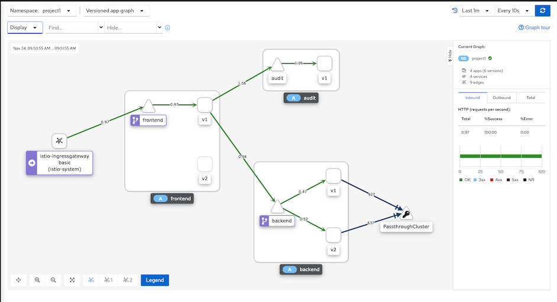
Observability
Traffic Analysis
- Check Kiali Console
login to OpenShift Developer Console, select project istio-system and open Kiali console

Login to Kiali Console and select Graph
- Namespace: select checkbox "project1"
- Display: select checkbox "Request distribution" and "Traffic animation"
Run following command
DOMAIN=$(oc whoami --show-console|awk -F'apps.' '{print $2}') cat manifests/frontend-virtual-service-with-weight-routing.yaml | sed 's/DOMAIN/'$DOMAIN'/'|oc apply -n project1 -f - oc patch virtualservice frontend --type='json' -p='[{"op":"replace","path":"/spec/http/0","value":{"route":[{"destination":{"host":"frontend.project1.svc.cluster.local","port":{"number":8080},"subset":"v1"},"weight":70},{"destination":{"host":"frontend.project1.svc.cluster.local","port":{"number":8080},"subset":"v2"},"weight":30}]}}]' -n project1 FRONTEND_ISTIO_ROUTE=$(oc get route -n istio-system|grep frontend-gateway |awk '{print $2}') while [ 1 ]; do OUTPUT=$(curl -s $FRONTEND_ISTIO_ROUTE) printf "%s\n" $OUTPUT sleep .2 doneCheck Kiali Console

Traffic analysis for frontend app. Select Application->frontend->inbound traffic and outbound traffic

Distributed Tracing
Distributed tracing with Jaeger. Select tab Tracing
Overall tracing for frontend app

Login to Jaeger by select "View in Tracing"

Drill down to tracing information

Simulate error on backend app
set weight to 50/50
oc patch virtualservice frontend --type='json' -p='[{"op":"replace","path":"/spec/http/0","value":{"route":[{"destination":{"host":"frontend.project1.svc.cluster.local","port":{"number":8080},"subset":"v1"},"weight":50},{"destination":{"host":"frontend.project1.svc.cluster.local","port":{"number":8080},"subset":"v2"},"weight":50}]}}]' -n project1set backend pod to return 504
oc exec -c backend -n project1 $(oc get pods -n project1 -l app=backend --no-headers -o=custom-columns="NAME:.metadata.name"|head -n 1) -- curl -w "\n\n" -s http://localhost:8080/stopRequest to frontend app
curl -s -w "\n" $FRONTEND_ISTIO_ROUTE curl -s -w "\n" $FRONTEND_ISTIO_ROUTEQuery Jaeger with tag http.status_code=504. Check detail trace to verify that envoy retry request to backend service

Drill down into detail of transaction
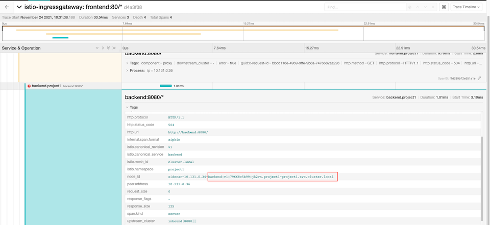
set backend pod to return 200
oc exec -c backend -n project1 $(oc get pods -n project1 -l app=backend --no-headers -o=custom-columns="NAME:.metadata.name"|head -n 1) -- curl -w "\n\n" -s http://localhost:8080/startJDBC Tracing with OpenTracing
Deploy todo application with Kustomize
oc create -k manifests/todo-kustomize/overlays/dev watch oc get pods -n todoTodo Application
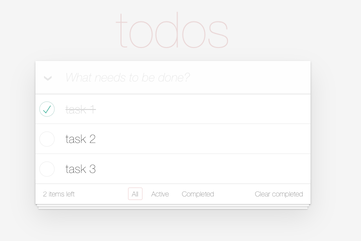
Add namespace todo to ServiceMeshMemberRoll
oc patch smmr default -n istio-system --type='json' -p='[{"op":"add","path":"/spec/members/-","value":"todo"}]'Add istio sidecar to deployment todo
oc patch deployment todo -n todo -p '{"spec":{"template":{"metadata":{"annotations":{"sidecar.istio.io/inject":"true"}}}}}'Change todo container image to quay.io/voravitl/todo:trace and set JDBC URL to use tracing driver
oc patch deployment todo -n todo --type='json' -p='[{"op":"replace","path":"/spec/template/spec/containers/0/image","value":"quay.io/voravitl/todo:trace"}]' oc set env deployment todo -n todo quarkus.datasource.jdbc.url=jdbc:tracing:postgresql://todo-db/todo oc set env deployment todo -n todo quarkus.jaeger.endpoint=http://jaeger-collector.istio-system:14268/api/tracesCreate, update and delete tasks in todo application then Check Kiali console.
Select by query type
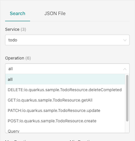
Transaction with create todo item
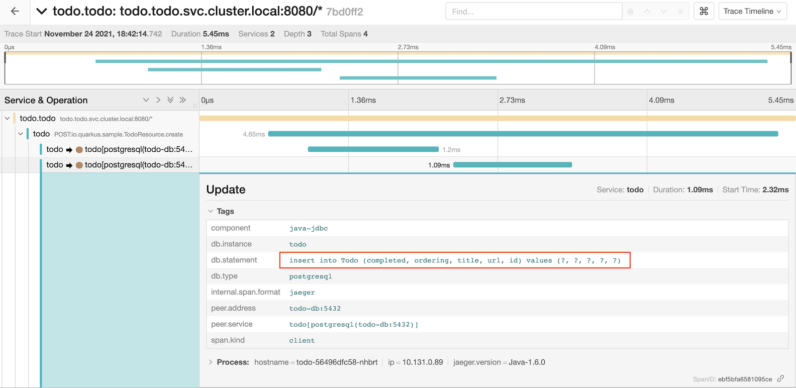
Transaction with query todo items
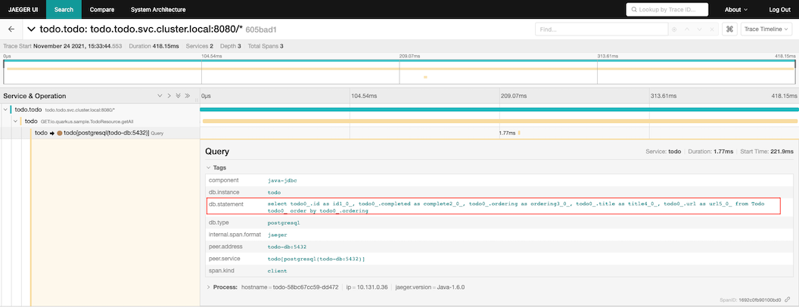
Transaction with deleting todo item
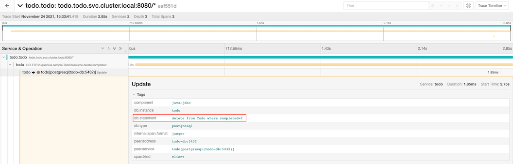
Check for traceid in todo pod's log
oc logs -f \ $(oc get pods -l app=todo -n todo --no-headers -o=custom-columns="NAME:.metadata.name"|head -n 1) \ -n todo -c todooutput
09:54:27 INFO x-b3-traceid=510dc04de55eb770167efec4a8cd622a, , parentId=167efec4a8cd622a, x-b3-spanid=5ad367c2c286947e, sampled=true [io.qu.sa.TodoResource] (executor-thread-0) update id:9 09:54:27 INFO x-b3-traceid=447bbafa3ed323909180faf410d181f5, , parentId=9180faf410d181f5, x-b3-spanid=a7a9d4b287917f5f, sampled=true [io.qu.sa.TodoResource] (executor-thread-0) update id:10 09:54:32 INFO x-b3-traceid=32c779ecb20641fa3823e3b6d448c41e, , parentId=3823e3b6d448c41e, x-b3-spanid=bf61443edfc58082, sampled=true [io.qu.sa.TodoResource] (executor-thread-0) getAll
Envoy Access Log
Envoy access log already enabled with ServiceMeshControlPlane CRD
proxy: accessLogging: envoyService: enabled: false file: encoding: TEXT name: /dev/stdoutCheck access log
oc logs -f \ $(oc get pods -n project1 --no-headers -o=custom-columns="NAME:.metadata.name" -l app=frontend|head -n 1) \ -c istio-proxy -n project1Sample output
03:17:46 INFO x-b3-traceid=7256eae02a1f11166d5add572165bfa0, , parentId=6d5add572165bfa0, x-b3-spanid=41e2c3434fbb022a, sampled=true [io.qu.sa.TodoResource] (executor-thread-2) getAllSearch by x-b3-traceid

View trace

Service Resilience
Configure our application to contains only frontend-v1 and backend-v1 and scale backend to 3 pods.
oc delete all --all -n project1 oc delete gateway --all -n project1 oc delete dr,vs --all -n project1 oc apply -f manifests/frontend.yaml -n project1 oc patch deployment/frontend-v1 -p '{"spec":{"template":{"metadata":{"annotations":{"sidecar.istio.io/inject":"true"}}}}}' -n project1 oc apply -f manifests/backend.yaml -n project1 oc delete deployment/frontend-v2 -n project1 oc delete deployment/backend-v2 -n project1 oc delete route frontend -n project1 oc set env deployment/frontend-v1 BACKEND_URL=http://backend:8080/ -n project1 oc annotate deployment frontend-v1 'app.openshift.io/connects-to=[{"apiVersion":"apps/v1","kind":"Deployment","name":"backend-v1"},{"apiVersion":"apps/v1","kind":"Deployment","name":"backend-v2"}]' -n project1 oc scale deployment backend-v1 --replicas=3 -n project1 oc apply -f manifests/backend-destination-rule-v1-only.yaml -n project1 oc apply -f manifests/backend-virtual-service.yaml -n project1 oc apply -f manifests/frontend-destination-rule-v1-only.yaml -n project1 DOMAIN=$(oc whoami --show-console|awk -F'apps.' '{print $2}') cat manifests/frontend-virtual-service.yaml | sed 's/DOMAIN/'$DOMAIN'/'|oc apply -n project1 -f - cat manifests/frontend-gateway.yaml | sed 's/DOMAIN/'$DOMAIN'/'|oc apply -n project1 -f - watch oc get pods -n project1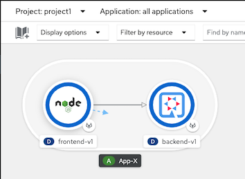
Test with cURL
FRONTEND_ISTIO_ROUTE=$(oc get route -n istio-system|grep frontend-gateway |awk '{print $2}') curl http://$FRONTEND_ISTIO_ROUTESample output - Check for field Host that is backend pod that processed for this request
Frontend version: 1.0.0 => [Backend: http://backend:8080/, Response: 200, Body: Backend version:v1, Response:200, Host:backend-v1-f4dbf777f-h7rwg, Status:200, Message: Hello, Quarkus]Loop 6 times. Result from backend will be round robin.
Create bash function
function loop_frontend(){ FRONTEND_ISTIO_ROUTE=$(oc get route -n istio-system|grep frontend-gateway |awk '{print $2}') COUNT=0 MAX=$1 while [ $COUNT -lt $MAX ]; do curl -s http://$FRONTEND_ISTIO_ROUTE | awk -F',' '{print $5 "=>" $2}' COUNT=$(expr $COUNT + 1 ) done }Run function with input paramter 6
loop_frontend 6Sample output
Host:backend-v1-7779cb476b-6wbsp=> Status:200 Host:backend-v1-7779cb476b-q2hz9=> Status:200 Host:backend-v1-7779cb476b-6wbsp=> Status:200 Host:backend-v1-7779cb476b-q2hz9=> Status:200 Host:backend-v1-7779cb476b-6wbsp=> Status:200 Host:backend-v1-7779cb476b-q2hz9=> Status:200 Host:backend-v1-7779cb476b-6wbsp=> Status:200 Host:backend-v1-7779cb476b-q2hz9=> Status:200 Host:backend-v1-7779cb476b-6wbsp=> Status:200 Host:backend-v1-7779cb476b-q2hz9=> Status:200Check that pods run on which node
oc get pods -o=custom-columns="NAME:.metadata.name,AZ:.metadata.labels['topology\.kubernetes\.io/zone']" -n project1Sample output
NAME AZ backend-v1-7779cb476b-6wbsp us-east-2a backend-v1-7779cb476b-bgk22 us-east-2a backend-v1-7779cb476b-q2hz9 us-east-2b frontend-v1-d6dc6768-vbzcc us-east-2aEnvoy has Localcity Load Balancing feature and this feature is enabled by default. A locality defines geographic location by region, zone and subzone. Envoy will try to send request to pod within defined geographic if avilable In this case is within same AZ
Notice that response came frome 2 pods in AZ us-east-2a same AZ with frontend
By default, Envoy will automatically retry if it get response with code 503
Force one backend pod to return 503
by command line.
oc exec -n project1 -c backend <backend pod same zone with frontend> -- curl -s http://localhost:8080/not_readySample output
Backend version:v1, Response:200, Host:backend-v1-7779cb476b-bgk22, Status:200, Message: Readiness: falseby Web Console

Verify response from that pod.
oc exec -n project1 -c backend <backend pod same zone with frontend> -- curl -sv http://localhost:8080/Sample Output
< HTTP/1.1 503 Service Unavailable < Content-Encoding: text/plain < Expires: Wed, 08 Sep 2021 12:46:28 GMT < Content-Length: 126 < Content-Type: text/plain;charset=UTF-8 < { [126 bytes data] * Connection #0 to host localhost left intact Backend version:v1, Response:503, Host:backend-v1-7779cb476b-bgk22, Status:503, Message: Application readiness is set to falseTest with cURL again. You will get only status 200
loop_frontend 10Sample Output
Host:backend-v1-7779cb476b-6wbsp=> Status:200 Host:backend-v1-7779cb476b-q2hz9=> Status:200 Host:backend-v1-7779cb476b-6wbsp=> Status:200 Host:backend-v1-7779cb476b-q2hz9=> Status:200 Host:backend-v1-7779cb476b-6wbsp=> Status:200 Host:backend-v1-7779cb476b-q2hz9=> Status:200 Host:backend-v1-7779cb476b-6wbsp=> Status:200 Host:backend-v1-7779cb476b-q2hz9=> Status:200 Host:backend-v1-7779cb476b-6wbsp=> Status:200 Host:backend-v1-7779cb476b-q2hz9=> Status:200Check tracing in Jaeger by query with http.response_code=503
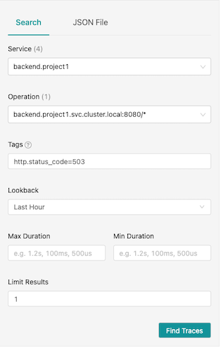
Drill down to check that envoy retry request to backend after it got 503 response.

Set backend pod to return 200
oc exec -n project1 -c backend <backend pod same zone with frontend> -- curl -s http://localhost:8080/ready
Circuit Breaker
Update destination rule with circuit breaker
oc apply -f manifests/backend-destination-rule-circuit-breaker.yaml -n project1Review Circuit Breaker configuration in deatination rule
- If found error 1 times (consecutiveErrors)
- then eject that pod from pool for 15 mintues (baseEjectionTime)
- Maximum number of pod that can be ejected is 100% (maxEjectionPercent)
- Check this every 15 min (interval)
outlierDetection: baseEjectionTime: 15m consecutiveErrors: 1 interval: 15m maxEjectionPercent: 100Set one backend pod to return 504 and verify that pod return 504
oc exec -n project1 -c backend <backend pod same zone with frontend> -- curl -s http://localhost:8080/stopSample output
Backend version:v1, Response:200, Host:backend-v1-7779cb476b-bgk22, Status:200, Message: Liveness: falseVerify that backend pod return 504
oc exec -n project1 -c backend <backend pod same zone with frontend> -- curl -s http://localhost:8080/Sample output
Backend version:v1, Response:504, Host:backend-v1-7779cb476b-bgk22, Status:504, Message: Application liveness is set to fasleTest again with cURL. You will get 504 just one times.
loop_frontend 15Sample output
Host:backend-v1-7779cb476b-6wbsp=> Status:200 Host:backend-v1-7779cb476b-6wbsp=> Status:200 Host:backend-v1-7779cb476b-q2hz9=> Status:504 Host:backend-v1-7779cb476b-6wbsp=> Status:200 Host:backend-v1-7779cb476b-6wbsp=> Status:200 Host:backend-v1-7779cb476b-6wbsp=> Status:200 Host:backend-v1-7779cb476b-6wbsp=> Status:200 Host:backend-v1-7779cb476b-6wbsp=> Status:200 Host:backend-v1-7779cb476b-6wbsp=> Status:200 Host:backend-v1-7779cb476b-6wbsp=> Status:200 Host:backend-v1-7779cb476b-6wbsp=> Status:200 Host:backend-v1-7779cb476b-6wbsp=> Status:200 Host:backend-v1-7779cb476b-6wbsp=> Status:200 Host:backend-v1-7779cb476b-6wbsp=> Status:200 Host:backend-v1-7779cb476b-6wbsp=> Status:200Check Kiali Console. Remark that there is lightning icon at backend service. This is represent for circuit breaker.

Set backend pod to normal status
oc exec -n project1 -c backend $(oc get pod -n project1 | grep -m1 backend | cut -d " " -f1) -- curl -sv http://localhost:8080/start
Secure with mTLS
Within Service Mesh
Enable data plane mTLS by edit ServiceMeshControlPlane with following configuration

Deploy another pod without sidecar and try to connect to anther services that is part of mesh

Pod Liveness and Readiness
Enable Liveness nad Readiness on backend-v1
oc set probe deployment backend-v1 \ --readiness --get-url=http://:8080/q/health/ready \ --initial-delay-seconds=5 --failure-threshold=1 --period-seconds=5 -n project1 oc set probe deployment backend-v1 \ --liveness --get-url=http://:8080/q/health/live \ --initial-delay-seconds=5 --failure-threshold=1 --period-seconds=5 -n project1Check for pod status
watch oc get pods -l app=backend,version=v1 -n project1Example of output
NAME READY STATUS RESTARTS AGE backend-v1-5846f59c84-p6tn5 1/2 CrashLoopBackOff 4 68sRemark: Liveness and Readiness probe fail because kubelet cannot connect to port 8080 anymore.
Rewrite HTTP probe by annotation to deployment
oc patch deployment/backend-v1 \ -n project1 \ -p '{"spec":{"template":{"metadata":{"annotations":{"sidecar.istio.io/rewriteAppHTTPProbers":"true"}}}}}'Remove Liveness and Readiness probe
oc set probe deployment backend-v1 --remove --readiness --liveness -n project1
Istio Gateway with mTLS
Create certificates and private key
mkdir -p certs DOMAIN=$(oc whoami --show-console | awk -F'apps.' '{print $2}') CN=frontend.apps.$DOMAIN echo "Create Root CA and Private Key" openssl req -x509 -sha256 -nodes -days 365 -newkey rsa:2048 -subj '/O=example Inc./CN=example.com' \ -keyout certs/example.com.key -out certs/example.com.crt echo "Create Certificate and Private Key for $CN" openssl req -out certs/frontend.csr -newkey rsa:2048 -nodes -keyout certs/frontend.key -subj "/CN=${CN}/O=Great Department" openssl x509 -req -days 365 -CA certs/example.com.crt -CAkey certs/example.com.key -set_serial 0 -in certs/frontend.csr -out certs/frontend.crtCreate secret to store private key and certificate
oc create secret generic frontend-credential \ --from-file=tls.key=certs/frontend.key \ --from-file=tls.crt=certs/frontend.crt \ -n istio-systemUpdate Gateway
cat manifests/gateway-tls.yaml|sed s/DOMAIN/$DOMAIN/g|oc apply -n project1 -f -Verify updated gateway configuration
oc get gateway frontend-gateway -n project1 -o yamlExample of output
spec: selector: istio: ingressgateway servers: - hosts: - frontend.apps.cluster-27bb.27bb.sandbox664.opentlc.com port: name: https number: 443 protocol: HTTPS tls: credentialName: frontend-credential mode: SIMPLE- port is changed to 443 with protocol HTTPS
- TLS mode is SIMPLE and use private key and certificate from secret name frontend-credential in control plane namespace
- SIMPLE mode is for TLS. For mutual TLS use MUTUAL
Check that route created by Istio Gateway is updated to passthrough mode
oc get route \ $(oc get route -n istio-system --no-headers -o=custom-columns="NAME:.metadata.name" | grep frontend) \ -n istio-system -o jsonpath='{.spec.tls.termination}'Example of output
passthroughTest with cURL
export GATEWAY_URL=$(oc get route $(oc get route -n istio-system | grep frontend | awk '{print $1}') -n istio-system -o yaml -o jsonpath='{.spec.host}') curl -kv https://$GATEWAY_URLExample of output
* SSL connection using TLSv1.2 / ECDHE-RSA-AES256-GCM-SHA384 * ALPN, server accepted to use h2 * Server certificate: * subject: CN=frontend-istio-user1.apps.; O=Great Department * start date: Sep 1 12:10:22 2021 GMT * expire date: Sep 1 12:10:22 2022 GMT * issuer: O=example Inc.; CN=example.com * SSL certificate verify result: unable to get local issuer certificate (20), continuing anyway. * Using HTTP2, server supports multi-use * Connection state changed (HTTP/2 confirmed)Create client certificate
CN=great-partner.apps.acme.com echo "Create Root CA and Private Key" openssl req -x509 -sha256 -nodes -days 365 -newkey rsa:2048 -subj '/O=Acme Inc./CN=acme.com' \ -keyout certs/acme.com.key -out certs/acme.com.crt echo "Create Certificate and Private Key for $CN" openssl req -out certs/great-partner.csr -newkey rsa:2048 -nodes -keyout certs/great-partner.key -subj "/CN=${CN}/O=Great Department" openssl x509 -req -days 365 -CA certs/acme.com.crt -CAkey certs/acme.com.key -set_serial 0 -in certs/great-partner.csr -out certs/great-partner.crtUpdate frontend-credential secret
oc create secret generic frontend-credential \ --from-file=tls.key=certs/frontend.key \ --from-file=tls.crt=certs/frontend.crt \ --from-file=ca.crt=certs/acme.com.crt \ -n istio-system --dry-run=client -o yaml \ | oc replace -n istio-system secret frontend-credential -f -Update frontend gateway TLS mode to MUTUAL
oc patch gateway frontend-gateway -n project1 \ --type='json' \ -p='[{"op":"replace","path":"/spec/servers/0/tls/mode","value":"MUTUAL"}]'Test
cURL without client certificate
curl -k https://$GATEWAY_URLYou will get following error
curl: (35) error:1401E410:SSL routines:CONNECT_CR_FINISHED:sslv3 alert handshake failurecURL with Acme Inc certificate
curl -kv --cacert certs/acme.com.crt \ --cert certs/great-partner.crt \ --key certs/great-partner.key \ https://$GATEWAY_URLExample of output
* ALPN, offering h2 * ALPN, offering http/1.1 * successfully set certificate verify locations: * CAfile: certs/acme.com.crt CApath: none ... * Server certificate: * subject: CN=frontend-istio-user1.apps.; O=Great Department * start date: Sep 1 12:10:22 2021 GMT * expire date: Sep 1 12:10:22 2022 GMT * issuer: O=example Inc.; CN=example.com * SSL certificate verify result: unable to get local issuer certificate (20), continuing anyway ... Frontend version: 1.0.0 => [Backend: http://backend:8080, Response: 200, Body: Backend version:v1, Response:200, Host:backend-v1-f4dbf777f-xp65r, Status:200, Message: Hello, Quarkus]Generate another certificate and private key (Pirate Inc) that frontend gateway not trust
CN=bad-partner.apps.pirate.com echo "Create Root CA and Private Key" openssl req -x509 -sha256 -nodes -days 365 -newkey rsa:2048 -subj '/O=Pirate Inc./CN=pirate.com' \ -keyout certs/pirate.com.key -out certs/pirate.com.crt echo "Create Certificate and Private Key for $CN" openssl req -out certs/bad-partner.csr -newkey rsa:2048 -nodes -keyout certs/bad-partner.key -subj "/CN=${CN}/O=Bad Department" openssl x509 -req -days 365 -CA certs/pirate.com.crt -CAkey certs/pirate.com.key -set_serial 0 -in certs/bad-partner.csr -out certs/bad-partner.crtcURL with Pirate Inc certificate
curl -k --cacert certs/pirate.com.crt \ --cert certs/bad-partner.crt \ --key certs/bad-partner.key \ https://$GATEWAY_URLYou will get error alert unknown ca
curl: (35) error:1401E418:SSL routines:CONNECT_CR_FINISHED:tlsv1 alert unknown caUpdate frontend gateway to trust Pirate Inc by update frontend-credential secret
cat certs/acme.com.crt > certs/trusted.crt cat certs/pirate.com.crt >> certs/trusted.crt oc create secret generic frontend-credential \ --from-file=tls.key=certs/frontend.key \ --from-file=tls.crt=certs/frontend.crt \ --from-file=ca.crt=certs/trusted.crt \ -n istio-system --dry-run=client -o yaml \ | oc replace -n istio-system secret frontend-credential -f -Test with Pirate Inc certificate
curl -k --cacert certs/pirate.com.crt \ --cert certs/bad-partner.crt \ --key certs/bad-partner.key \ https://$GATEWAY_URLRecheck that Acme Inc can acess frontend app
curl -kv --cacert certs/acme.com.crt \ --cert certs/great-partner.crt \ --key certs/great-partner.key \ https://$GATEWAY_URL
Update frontend gateway TLS mode to SIMPLE
oc patch gateway frontend-gateway -n project1 \ --type='json' \ -p='[{"op":"replace","path":"/spec/servers/0/tls/mode","value":"SIMPLE"}]'
JWT Token
Red Hat Single Sign-On
Setup Red Hat Single Sign-On (Keycloak)
Create namespace
oc new-project sso --description="Red Hat Single Sign-On" --display-name="Red Hat Single Sign-On"Install Red Hat Single Sign-On Operator

Install to namespace sso

Create Keycloak instance
oc create -f manifests/keycloak.yaml -n sso watch oc get pods -n ssoSample outout
NAME READY STATUS RESTARTS AGE keycloak-0 0/1 PodInitializing 0 19s keycloak-postgresql-76c57d6f5b-jgnx6 0/1 ContainerCreating 0 19s rhsso-operator-748cdf5c96-6nwtq 1/1 Running 0 82sCosmetic topology view
oc label deployment/keycloak-postgresql app.kubernetes.io/name=postgresql -n sso oc annotate statefulset/keycloak 'app.openshift.io/connects-to=[{"apiVersion":"apps/v1","kind":"Deployment","name":"keycloak-postgresql"}]' -n sso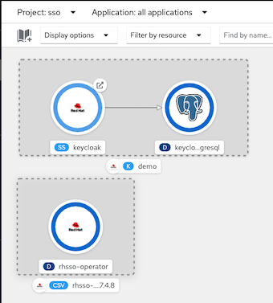
Extract admin password
KEYCLOAK_ADMIN_PASSWORD=$(oc extract secret/credential-demo -n sso --to=- --keys=ADMIN_PASSWORD 2>/dev/null)Create Realm and Keycloak Client with Client Credential
oc create -f manifests/keycloak-realm.yaml -n sso oc create -f manifests/keycloak-client.yaml -n ssoClient secret
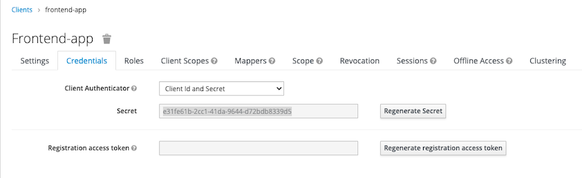
Test login with client secret
KEYCLOAK=$(oc get route/keycloak -n sso -o jsonpath='{.spec.host}') CLIENT_SECRET=e31fe61b-2cc1-41da-9644-d72bdb8339d5 TOKEN=$(curl -s --location --request \ POST https://$KEYCLOAK/auth/realms/demo/protocol/openid-connect/token \ --header 'Content-Type: application/x-www-form-urlencoded' \ --data-urlencode client_id=frontend-app \ --data-urlencode client_secret=$CLIENT_SECRET \ --data-urlencode scope=email \ --data-urlencode grant_type=client_credentials | jq .access_token | sed s/\"//g)
RequestAuthentication and Authorization Policy
Create RequestAuthentication and AuthorizationPolicy
oc apply -f manitests/frontend-jwt -n project1Test without JWT token. You will get HTTP resonse code 403
curl -kv https://frontend-user1.apps.cluster-7bbc.7bbc.sandbox1708.opentlc.com- Test with invalid JWT token. You will get HTTP resonse code 401
Test with valid JWT token
TOKEN=$(curl -s --location --request \ POST https://$KEYCLOAK/auth/realms/demo/protocol/openid-connect/token \ --header 'Content-Type: application/x-www-form-urlencoded' \ --data-urlencode client_id=frontend-app \ --data-urlencode client_secret=$CLIENT_SECRET \ --data-urlencode scope=email \ --data-urlencode grant_type=client_credentials | jq .access_token | sed s/\"//g) curl --header 'Authorization: Bearer '$TOKEN -kv https://frontend-user1.apps.cluster-7bbc.7bbc.sandbox1708.opentlc.comTest with expired JWT token (token life is 5 minutes). You will get HTTP response code 401 with following message
Jwt is expired* Closing connection 0
Service Level Objective (SLO)
We can use Service Level Indicator (SLI) and Service Level Objective (SLO) to determine and measure availability of services. For RESTful Web Service we can use HTTP response code to measure for SLI
Deploy applicaition
oc delete all --all -n project1 oc delete gateway --all -n project1 oc delete dr,vs --all -n project1 oc apply -f manifests/frontend.yaml -n project1 oc patch deployment/frontend-v1 -p '{"spec":{"template":{"metadata":{"annotations":{"sidecar.istio.io/inject":"true"}}}}}' -n project1 oc apply -f manifests/backend.yaml -n project1 oc scale deployment/frontend-v1 --replicas=5 -n project1 oc scale deployment/backend-v1 --replicas=10 -n project1 oc scale deployment/backend-v2 --replicas=10 -n project1 oc delete deployment/frontend-v2 -n project1 oc delete route frontend -n project1 oc set env deployment/frontend-v1 BACKEND_URL=http://backend:8080/ -n project1 oc annotate deployment frontend-v1 'app.openshift.io/connects-to=[{"apiVersion":"apps/v1","kind":"Deployment","name":"backend-v1"},{"apiVersion":"apps/v1","kind":"Deployment","name":"backend-v2"}]' -n project1 oc apply -f manifests/backend-destination-rule.yaml -n project1 oc apply -f manifests/backend-virtual-service-v1-v2-50-50.yaml -n project1 oc apply -f manifests/frontend-destination-rule-v1-only.yaml -n project1 DOMAIN=$(oc whoami --show-console|awk -F'apps.' '{print $2}') cat manifests/frontend-virtual-service.yaml | sed 's/DOMAIN/'$DOMAIN'/'|oc apply -n project1 -f - cat manifests/frontend-gateway.yaml | sed 's/DOMAIN/'$DOMAIN'/'|oc apply -n project1 -f - oc patch virtualservice backend --type='json' -p='[{"op":"replace","path":"/spec/http/0","value":{"route":[{"destination":{"host":"backend.project1.svc.cluster.local","port":{"number":8080},"subset":"v1"},"weight":100},{"destination":{"host":"backend.project1.svc.cluster.local","port":{"number":8080},"subset":"v2"},"weight":0}]}}]' -n project1 watch oc get pods -n project1Generate load
Create namespace
oc new-project load-testRun K6 with 15 threads for 10 minutes to simulate workload
FRONTEND_ISTIO_ROUTE=$(oc get route -n istio-system|grep frontend-gateway |awk '{print $2}') oc run load-test -n load-test -i --rm \ --image=loadimpact/k6 --rm=true --restart=Never \ -- run - < manifests/load-test-k6.js \ -e URL=http://$FRONTEND_ISTIO_ROUTE -e THREADS=15 -e DURATION=10m -e RAMPUP=1s -e RAMPDOWN=0s
Prometheus in Service Mesh's control plane contains information about HTTP responses then we can use following PromQL to check for the sucessfull request and total request of backend service
Use OpenShift Developer Console, select project istio-system and open Prometheus console
Success Rate
Successful request for last 5 minutes
sum(increase(istio_requests_total{destination_service_name="backend",response_code!~"5*"}[5m]))
Total requests for last 5 minutes
sum(increase(istio_requests_total{destination_service_name="backend"}[5m]))
Latency
99th Percentile of response time in sec of frontend service
histogram_quantile(0.99, sum(rate(istio_request_duration_milliseconds_bucket{destination_service_name="frontend",response_code!~"5*"}[5m])) by (le))/1000
SLO for success rate can be calculated by following PromQL and compare this to your desired service level e.g. 99.9%
sum(increase(istio_requests_total{destination_service_name="backend",response_code!~"5*"}[5m])) / sum(increase(istio_requests_total{destination_service_name="backend"}[5m]))*100Login to Grafana Dashbaord in control plane and import SLO Dashbaord
Backend Application service %availability
sum(increase(istio_requests_total{destination_service_name="backend",response_code!~"5.*"}[5m])) / sum(increase(istio_requests_total{destination_service_name="backend"}[5m])) *100Frontend 99th percentile response time in second
histogram_quantile(0.99, sum(rate(istio_request_duration_milliseconds_bucket{destination_service_name="frontend",response_code!~"5*"}[5m])) by (le))/1000Backend 99th percentile response time in second
histogram_quantile(0.99, sum(rate(istio_request_duration_milliseconds_bucket{destination_service_name="backend",response_code!~"5*"}[5m])) by (le))/1000
Run following bash script to force 5 backend-v1 pod to return 504 then set those pods to return to 200 OK.
for pod in $(oc get pods -l app=backend,version=v1 --no-headers -o=custom-columns="NAME:.metadata.name" -n project1|head -n 5|sort) do oc exec -n project1 -c backend $pod -- curl -s http://localhost:8080/stop -w "\n" sleep 1 done sleep 10 for pod in $(oc get pods -l app=backend,version=v1 --no-headers -o=custom-columns="NAME:.metadata.name" -n project1|head -n 5|sort) do oc exec -n project1 -c backend $pod -- curl -s http://localhost:8080/start -w "\n" doneRun following bash script to set traffic to backend-v2 and check both frontend and backend response time increasing.
oc patch virtualservice backend --type='json' -p='[{"op":"replace","path":"/spec/http/0","value":{"route":[{"destination":{"host":"backend.project1.svc.cluster.local","port":{"number":8080},"subset":"v1"},"weight":30},{"destination":{"host":"backend.project1.svc.cluster.local","port":{"number":8080},"subset":"v2"},"weight":70}]}}]' -n project1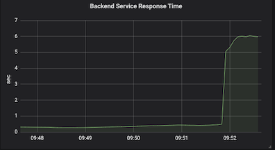
Control Plane with High Availability
OpenShift Service Mesh 1.x
ServiceMeshControlPlane with high availability configuration
Configure Horizontal Pod Autoscaler (HPA) for ingress-gateway
- Set request and limit
- Set autoscaling to true
Set number of min and max replicas with target CPU utilization to trigger HPA
ingress: enabled: true ingress: false runtime: container: resources: requests: cpu: 10m memory: 128Mi limits: cpu: 2000m memory: 2048Mi
For others components
Set number of replicas to 2
deployment: autoScaling: enabled: false replicas: 2Set pod anti-affinity to prevent scheduler to place pods to the same node
Remark: namespaces in podAntiAffinity is needed to support multiples control planes in the same OpenShift cluster. Change this to match name of control plane's namespace
pod: tolerations: - key: node.kubernetes.io/unreachable operator: Exists effect: NoExecute tolerationSeconds: 60 affinity: podAntiAffinity: requiredDuringScheduling: - key: istio topologyKey: kubernetes.io/hostname operator: In values: - galley namespaces: istio-system
Check that pods of each deployment run on different nodes
oc get pods -o wide -n istio-system -o custom-columns=NAME:.metadata.name,NODE:.spec.nodeName,PHASE:.status.phaseOutput
NAME NODE PHASE grafana-7bdb4fb848-847c8 ip-10-0-160-48.us-east-2.compute.internal Running istio-citadel-6668b5b947-njgbb ip-10-0-160-48.us-east-2.compute.internal Running istio-citadel-6668b5b947-nk9dz ip-10-0-137-21.us-east-2.compute.internal Running istio-galley-6dc7f9c496-hkm57 ip-10-0-137-21.us-east-2.compute.internal Running istio-galley-6dc7f9c496-qcw9q ip-10-0-160-48.us-east-2.compute.internal Running istio-ingressgateway-6bcd484457-25tq7 ip-10-0-137-21.us-east-2.compute.internal Running istio-ingressgateway-6bcd484457-nvfb9 ip-10-0-160-48.us-east-2.compute.internal Running istio-pilot-74d5db759c-m9jxm ip-10-0-137-21.us-east-2.compute.internal Running istio-pilot-74d5db759c-rcdxj ip-10-0-160-48.us-east-2.compute.internal Running istio-policy-58ff56d7dc-26wsq ip-10-0-137-21.us-east-2.compute.internal Running istio-policy-58ff56d7dc-62gwl ip-10-0-160-48.us-east-2.compute.internal Running istio-sidecar-injector-ffc58c87-4t5gc ip-10-0-137-21.us-east-2.compute.internal Running istio-sidecar-injector-ffc58c87-rjz7l ip-10-0-160-48.us-east-2.compute.internal Running istio-telemetry-646d7cf56c-fz72g ip-10-0-137-21.us-east-2.compute.internal Running istio-telemetry-646d7cf56c-lctxg ip-10-0-160-48.us-east-2.compute.internal Running jaeger-7b866d475f-nhrp5 ip-10-0-160-48.us-east-2.compute.internal Running kiali-75dc58b5f6-bwk7q ip-10-0-137-21.us-east-2.compute.internal Running prometheus-85db9d786b-vzskf ip-10-0-160-48.us-east-2.compute.internal Running prometheus-85db9d786b-wgrwz ip-10-0-137-21.us-east-2.compute.internal RunningVerify HPA for ingress gateway
oc get hpa -n istio-systemOutput
NAME REFERENCE TARGETS MINPODS MAXPODS REPLICAS AGE istio-ingressgateway Deployment/istio-ingressgateway 0%/85% 2 4 2 10m
OpenShift Service Mesh 2.x
ServiceMeshControlPlane with high availability configuration
Configure Horizontal Pod Autoscaler (HPA) for ingress-gateway
- Set request and limit
- Set autoscaling to true
Set number of min and max replicas with target CPU utilization to trigger HPA
ingress: enabled: true runtime: container: resources: requests: cpu: 500m memory: 300Mi limits: cpu: 2 memory: 1Gi deployment: autoScaling: enabled: true maxReplicas: 4 minReplicas: 2 targetCPUUtilizationPercentage: 85
For others components
Set number of replicas to 2
pilot: deployment: replicas: 2
Check that pods of each deployment run on different nodes
oc get pods -n istio-systemOutput
grafana-78f656547-gkm92 2/2 Running 0 54s istio-ingressgateway-667749f4bd-pfl2l 1/1 Running 0 54s istio-ingressgateway-667749f4bd-sfwx4 1/1 Running 0 39s istiod-basic-install-6994d86579-4n8jf 1/1 Running 0 77s istiod-basic-install-6994d86579-b5bgv 1/1 Running 0 77s jaeger-85d4744d8b-krqfl 2/2 Running 0 54s kiali-784df775f8-xccsw 1/1 Running 0 28s prometheus-79ff59d59f-6j99k 3/3 Running 0 65s prometheus-79ff59d59f-msrpb 3/3 Running 0 65sVerify HPA for ingress gateway
oc get hpa -n istio-systemOutput
NAME REFERENCE TARGETS MINPODS MAXPODS REPLICAS AGE istio-ingressgateway Deployment/istio-ingressgateway 0%/85% 2 4 2 10mCheck that pods of each deployment run on different nodes
oc get pods -o wide -n istio-system -o custom-columns=NAME:.metadata.name,NODE:.spec.nodeName,PHASE:.status.phaseOutput
NAME NODE PHASE grafana-99f7c499f-jnd9k ip-10-0-166-202.us-east-2.compute.internal Running istio-ingressgateway-5fc94885b5-hjhqw ip-10-0-166-202.us-east-2.compute.internal Running istio-ingressgateway-5fc94885b5-hxn9r ip-10-0-151-28.us-east-2.compute.internal Running istiod-basic-install-58c9bc5bf8-4wbhq ip-10-0-151-28.us-east-2.compute.internal Running jaeger-596448d54d-gwn97 ip-10-0-166-202.us-east-2.compute.internal Running kiali-85c677967c-k7767 ip-10-0-166-202.us-east-2.compute.internal Running prometheus-565c997f45-plqqb ip-10-0-151-28.us-east-2.compute.internal Running prometheus-565c997f45-s7q2t ip-10-0-166-202.us-east-2.compute.internal Running
Rate Limit
OpenShift Service Mesh 2.0.x or Istio 1.6.x
Support Rate Limiting feature in OSSM 2.1.x, OSSM 2.0.x was built on upstream istio 1.6 and we tested Rating Limiting case by
Enable SMCP Policy Mixer Plugins: (change smcp/basic to another your control plane)
oc patch -n istio-system smcp/basic --type merge -p '{"spec":{"policy":{"type": "Mixer", "mixer":{"enableChecks":true}}}}'wait until operator create istio-policy pod complete.
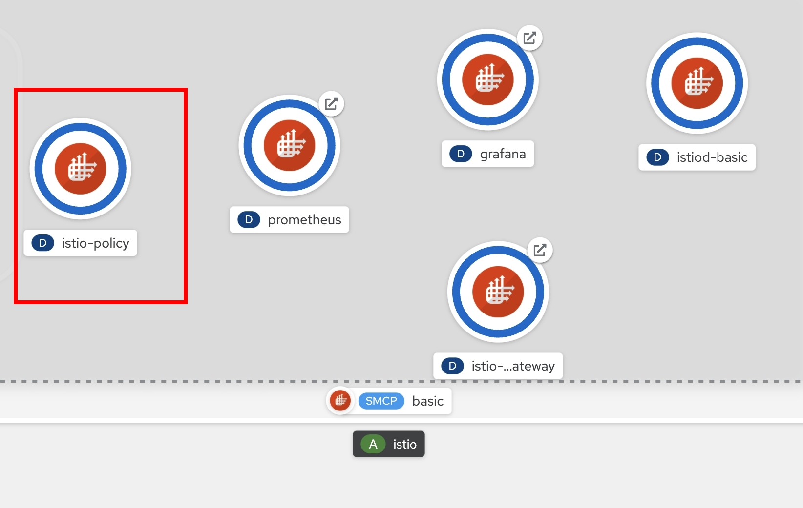
Create Sample Microservice for Test this feature
oc delete all --all -n project1 oc delete gateway --all -n project1 oc delete dr,vs --all -n project1 oc apply -f manifests/frontend.yaml -n project1 oc patch deployment/frontend-v1 -p '{"spec":{"template":{"metadata":{"annotations":{"sidecar.istio.io/inject":"true"}}}}}' -n project1 oc apply -f manifests/backend.yaml -n project1 oc delete deployment/frontend-v2 -n project1 oc delete deployment/backend-v2 -n project1 oc delete route frontend -n project1 oc set env deployment/frontend-v1 BACKEND_URL=http://backend:8080/ -n project1 oc annotate deployment frontend-v1 'app.openshift.io/connects-to=[{"apiVersion":"apps/v1","kind":"Deployment","name":"backend-v1"},{"apiVersion":"apps/v1","kind":"Deployment","name":"backend-v2"}]' -n project1 oc scale deployment backend-v1 --replicas=3 -n project1 oc apply -f manifests/backend-destination-rule-v1-only.yaml -n project1 oc apply -f manifests/backend-virtual-service.yaml -n project1 oc apply -f manifests/frontend-destination-rule-v1-only.yaml -n project1 DOMAIN=$(oc whoami --show-console|awk -F'apps.' '{print $2}') cat manifests/frontend-virtual-service.yaml | sed 's/DOMAIN/'$DOMAIN'/'|oc apply -n project1 -f - cat manifests/frontend-gateway.yaml | sed 's/DOMAIN/'$DOMAIN'/'|oc apply -n project1 -f - watch oc get pods -n project1after finish
Test with cURL
FRONTEND_ISTIO_ROUTE=$(oc get route -n istio-system|grep frontend-gateway |awk '{print $2}')
curl http://$FRONTEND_ISTIO_ROUTE
Sample output - Check for field Host that is backend pod that processed for this request
Frontend version: 1.0.0 => [Backend: http://backend:8080/, Response: 200, Body: Backend version:v1, Response:200, Host:backend-v1-f4dbf777f-h7rwg, Status:200, Message: Hello, Quarkus]
Follow upstream istio 1.6 Rate Limiting documentation for test rate limit : https://istio.io/v1.6/docs/tasks/policy-enforcement/rate-limiting/ or use this example (memquota example)
create rate limit configuration (QuotaSpecBinding, QuotaSpec, instance, rule, handler), see detail in rate-limit-memquota.yaml
oc apply -f manifests/mesh/rate-limit-memquota.yamlset handler for manage receive only 1 req/min
apiVersion: config.istio.io/v1alpha2 kind: handler metadata: name: quotahandler namespace: istio-system spec: compiledAdapter: memquota params: quotas: - name: requestcountquota.instance.istio-system maxAmount: 1 validDuration: 60sset service for rate limit
apiVersion: config.istio.io/v1alpha2 kind: QuotaSpecBinding metadata: name: request-count namespace: istio-system spec: quotaSpecs: - name: request-count namespace: istio-system services: - name: frontend namespace: project1 # default #- service: '*' # Uncomment this to bind *all* services to request-count
Test with cURL
call first time
curl -v http://$FRONTEND_ISTIO_ROUTEexample result
* Trying 3.131.170.108... * TCP_NODELAY set * Connected to frontend.apps.cluster-deff.deff.sandbox1488.opentlc.com (3.131.170.108) port 80 (#0) > GET / HTTP/1.1 > Host: frontend.apps.cluster-deff.deff.sandbox1488.opentlc.com > User-Agent: curl/7.64.1 > Accept: */* > < HTTP/1.1 200 OK < x-correlation-id: 79e46c33-987c-49a4-8c4b-5844d1ab1095 < x-powered-by: Express < content-type: text/html; charset=utf-8 < content-length: 181 < etag: W/"b5-44EZPxVbVPm/rx6FVPtx2E/v4RQ" < date: Wed, 06 Oct 2021 08:35:18 GMT < x-envoy-upstream-service-time: 73 < server: istio-envoy < set-cookie: 56146e318a5c046b870cb6cd1fd45ebf=9e6c14811364e963dccffa42a2e0f2f2; path=/; HttpOnly < cache-control: private < * Connection #0 to host frontend.apps.cluster-deff.deff.sandbox1488.opentlc.com left intact Frontend version: v1 => [Backend: http://backend:8080/, Response: 200, Body: Backend version:v1, Response:200, Host:backend-v1-79668c5b99-tkqjn, Status:200, Message: Hello, Quarkus]* Closing connection 0call it again for check rate limit, openshift service mesh will return HTTP Status 429 Too Many Requests
curl -v http://$FRONTEND_ISTIO_ROUTEexample result
* Trying 3.131.170.108... * TCP_NODELAY set * Connected to frontend.apps.cluster-deff.deff.sandbox1488.opentlc.com (3.131.170.108) port 80 (#0) > GET / HTTP/1.1 > Host: frontend.apps.cluster-deff.deff.sandbox1488.opentlc.com > User-Agent: curl/7.64.1 > Accept: */* > < HTTP/1.1 429 Too Many Requests < content-length: 60 < content-type: text/plain < date: Wed, 06 Oct 2021 08:36:42 GMT < server: istio-envoy < set-cookie: 56146e318a5c046b870cb6cd1fd45ebf=9e6c14811364e963dccffa42a2e0f2f2; path=/; HttpOnly < * Connection #0 to host frontend.apps.cluster-deff.deff.sandbox1488.opentlc.com left intact RESOURCE_EXHAUSTED:Quota is exhausted for: requestcountquota* Closing connection 0retest again after 1 minute, service will back response with HTTP Status 200